PLAN · HOMEPAGE
A shape breaker between “What sets us apart” and “Markets”
Four ways to break the seam on the right-hand side, each carrying the Hana mark as a watermark. All four stay inside the brand rules: flat fills, 1px lines, no shadows, blue-deep as the only dark surface. Each option is shown in context — bottom of the Why section above, top of Markets below.
Chamfered slab, bleeding right
A blue-deep slab anchored to the right edge with a 72px diagonal cut on its leading corner — the same chamfer language already used on the market tiles. It sits on the seam so the Markets grid starts underneath it. Room for one short line of copy.
What sets us apart
From wafer to finished product. EMS & OSAT under one group.
Programs that span PCB assembly and semiconductor packaging within one group — single-source accountability, from die to box build.
Why Hana
SINCE 1978
Three countries. One group.
Who we serve
Markets we serve.
Notched panel straddling the seam
A smaller card floats over the boundary — half in each section — with a notched bottom-right corner. Lighter touch than 01, and it reads as a deliberate join rather than a wall. The mark sits inside at low opacity, cropped by the notch.
What sets us apart
From wafer to finished product. EMS & OSAT under one group.
Programs that span PCB assembly and semiconductor packaging within one group — single-source accountability, from die to box build.
Why HanaVERTICALLY INTEGRATED
Die to box build, under one group.
Who we serve
Markets we serve.
Diagonal seam, rising to the right
No added object — the section boundary itself becomes a slant, and the Markets background cuts up into the Why section on the right. The mark sits large and faint in the wedge it opens up. The quietest option, and the only one that changes nothing about the content blocks.
What sets us apart
From wafer to finished product. EMS & OSAT under one group.
Programs that span PCB assembly and semiconductor packaging within one group — single-source accountability, from die to box build.
Why Hana
Who we serve
Markets we serve.
Quarter-arc cut-in
A blue-deep quarter-round pinned to the right edge of the seam, picking up the rounded stroke caps in the mark. Softer than the chamfer and the only curved form on the page, so it draws the eye without any copy in it. Watermark only.
What sets us apart
From wafer to finished product. EMS & OSAT under one group.
Programs that span PCB assembly and semiconductor packaging within one group — single-source accountability, from die to box build.
Why HanaWho we serve
Markets we serve.
Diagonal seam — full section, with the photo
Option 03 in the real layout: headline and copy left, the SMT photo right, and the slant opening below both. Mark at 240px, 26% — visible as a form but still reading as a watermark against the dot grid.
What sets us apart
From wafer to finished product. EMS & OSAT under one group. One Partner.
Programs that span PCB assembly and semiconductor packaging within one group — single-source accountability, from die to box build. We hold that work to the most stringent quality standards — ISO 9001, IATF 16949, ISO 13485, ISO 14001, ISO 45001, and ISO 27001.
Why HanaWho we serve
Markets we serve.
Same, mark pushed larger
A deeper slant (220px) with the mark at 400px, 30%, pushed off the right edge — the diagonal takes its top and the page edge takes its right, leaving the lower-left of the glyph. The biggest presence of the three, at the cost of showing the mark only in part.
What sets us apart
From wafer to finished product. EMS & OSAT under one group. One Partner.
Programs that span PCB assembly and semiconductor packaging within one group — single-source accountability, from die to box build. We hold that work to the most stringent quality standards — ISO 9001, IATF 16949, ISO 13485, ISO 14001, ISO 45001, and ISO 27001.
Why HanaWho we serve
Markets we serve.
Same, mark in the Markets wedge instead
The mark sits below the slant — on the Markets side, in the triangle the cut leaves behind — so it belongs to the section it introduces. 320px at 20%, left of the right edge, clipped by the diagonal from above.
What sets us apart
From wafer to finished product. EMS & OSAT under one group. One Partner.
Programs that span PCB assembly and semiconductor packaging within one group — single-source accountability, from die to box build. We hold that work to the most stringent quality standards — ISO 9001, IATF 16949, ISO 13485, ISO 14001, ISO 45001, and ISO 27001.
Why HanaWhat I'd recommend
Of the three 03 treatments, B holds up best — cropping the mark by both the slant and the page edge lets it go large without reading as a stray logo. C is the alternative if you'd rather the mark introduce Markets than close out Why. Tell me which and I'll build it into the homepage; below 900px the slant flattens back to a straight border and the mark drops out.